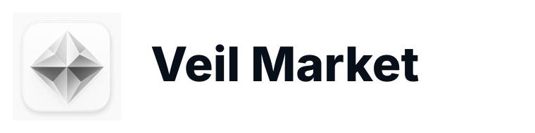
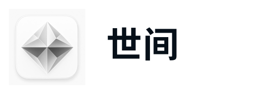

Signal
钻石切面代表信息被市场价格折射、校准和聚合。
Merxi Branding Book
把 Light Mode 和 Dark Mode 合并为一套完整品牌手册：同一个钻石信号 Logo，同一套全球化色彩系统，同一套多语言字体系统，覆盖 App、Web、社媒、招商、线下活动和投资人材料。
01 Brand Strategy
Merxi 的品牌核心不是“下注”，而是“把未来事件变成可读信号”。浅色建立可信和高频阅读效率，深色负责高价值传播、发布会、招商和高级感。
钻石切面代表信息被市场价格折射、校准和聚合。
大量白色、清晰表格和克制边框让产品接近金融基础设施。
玉青和钴蓝用于行动、确认、概率变化和实时反馈。
香槟金只作为合作、评级、里程碑和招商场景的少量高光。
02 Logo System
本 Brand Book 保留 Light Mode 版本里的 Logo 作为主标识，不采用后续三套新 Logo 方案。Dark Mode icon 是同一钻石信号的暗色应用版本，用于深色系统和高端传播场景。
App / web icon 不小于 24px；招商物料不小于 14mm；社媒头像保留 18% 外边距。
浅底使用白色或 Pearl；深底使用 Ink，不在复杂照片上直接放置 Logo。
不重绘切面、不改变色相、不增加博彩红绿、不把 Logo 拉伸成菱形外框。
Black / White Lockups
黑白组合用于正式合同、媒体包、招股/招商文件、黑白印刷、法律页脚和高对比背景。这里保留原始 3D icon 的圆角底板、钻石体积和光影，只做灰阶黑白处理；英文品牌组合写作 `MERXI Market`，中文品牌组合写作 `世间`。

浅底、纸面、PDF、官网页脚、媒体包默认使用。

深色 hero、发布会大屏、深色招商封面和反色媒体图使用。

中文官网、公众号、中文招商材料、线下中文导视使用。

中文深色 KV、活动主屏、夜间场景、深色海报使用。
| Rule | English Lockup | Chinese Lockup | Standard |
|---|---|---|---|
| Primary wording | MERXI Market | 世间 | 英文和中文各自独立使用，不做 `MERXI Market 世间` 的默认主组合。 |
| Geometry | Icon height equals wordmark cap-height zone plus optical padding. | Icon height equals Chinese character block plus optical padding. | 以 Icon 外框高度为 X，字标与 Icon 间距为 0.28X，安全区为 0.5X。 |
| Minimum size | Digital horizontal lockup not below 132px wide. | Digital horizontal lockup not below 104px wide. | 印刷最小高度 10mm；低于最小尺寸时只使用 icon，不使用组合字标。 |
| Background | Black lockup on white / Pearl / light neutral. | Black lockup on white / Pearl / light neutral. | White lockup only on Deep Ink / Graphite / high-contrast dark imagery with overlay. |
| Do not | Do not shorten to `Merxi`, pluralize as `MERXI Markets`, or restyle the lockup. | 不要改成预测市场、MERXI 世间或其他混合写法。 | 不要改成扁平线稿，不要拉伸、描边文字、改字重、改字距、加渐变或把黑白版重新上彩。 |
03 Icon System
Merxi 的 Icon 系统必须像国际一线产品一样稳定：Light icon 负责默认可信界面，Dark icon 负责暗色系统、发布会、深色社媒头像和高级传播。两者共享同一钻石切面、同一颜色逻辑、同一安全区，不允许变成两套不同 Logo。
Icon 外侧至少保留画布宽度 18% 的安全区；社媒圆形裁切时，钻石主体不得超过圆形可视区的 72%。
App / Web 常规不小于 24px；favicon 16px 只使用简化识别，不承载细节；印刷物料不小于 14mm。
Light icon 在白底上必须保留浅灰蓝边线；Dark icon 在深墨底上必须有 1px 亮边或阴影分离。
所有社媒头像优先按 1024x1024 出主文件；圆形头像检查 400、320、180、64 四档裁切。
不要旋转、拉伸、重绘切面、加红绿涨跌色、放在低对比照片上，或把 Light/Dark icon 混成第三种版本。
生产文件至少保留 PNG 1024、512、256、128、64、32；如做 favicon，应另行准备简化小尺寸版本。
| Surface | Use Light Icon | Use Dark Icon | Standard |
|---|---|---|---|
| App launcher | Light theme default, iOS / Android light appearance. | Dark appearance, premium launch moments. | Export 1024x1024 master, test at 180 / 64 / 32. |
| Website header | Light navbar, documentation, product pages. | Dark hero, event pages, investor landing. | Keep 18% padding; never place on noisy image without overlay. |
| Social avatar | White / Pearl feeds, Asian growth accounts. | X / LinkedIn dark profile, event campaign accounts. | Design at 1024; check circular crop at 400, 320, 180. |
| Print / offline | White paper, badge, brochure, booth collateral. | Stage screen, black badge, keynote cover. | Minimum 14mm; add keyline on same-tone backgrounds. |
| Contrast Pair | Ratio | Result | Icon Rule |
|---|---|---|---|
| Pearl White / Deep Ink | 19.14:1 | Pass AAA | Approved for core text, icon background separation and dark hero overlays. |
| Graphite / Pearl White | 16.41:1 | Pass AAA | Approved for icon labels, UI text and brand book captions. |
| Jade / Deep Ink | 8.20:1 | Pass AAA | Approved for dark-mode icon glow, signals and CTA text. |
| Cobalt / Pearl White | 5.12:1 | Pass AA | Approved for focus states and large UI labels; use Graphite for dense text. |
| Champagne / Pearl White | 2.25:1 | Fail text | Use only as premium accent, facet highlight or large decorative block on light surfaces. |
| Jade / Pearl White | 2.33:1 | Fail text | Use as fill/accent on light UI, not as small text. Pair with Graphite label. |
Accessibility baseline: WCAG 2.x AA requires 4.5:1 for normal text and 3:1 for large text / non-text UI contrast; AAA normal text target is 7:1. Merxi 的 Light/Dark icon 背景分离、主文字和深色信号色均达到或超过这个国际基线；Champagne 和 Jade 在浅底上只做装饰或填充，不做小字号文本。
03B Option 2 / Merxi Prism Trial
这里把新的 Merxi Prism Icon 设计页作为完整 Option 2 放进 Brand Book。它保留现有品牌色和字体系统，但提供新的 App Icon 方向、三套色彩方案、黄金比例、尺寸导出和视觉审计，便于和当前 Light/Dark diamond icon 做决策比较。
04 Color System
主品牌色不直接使用涨跌红绿，避免博彩感和地区冲突。红绿只进入数据语义层，并按市场区域切换。
| Layer | Light Mode | Dark Mode | Usage |
|---|---|---|---|
| surface/base | #FFFFFF / #F7FAFC | #071019 / #03070B | App、Web、品牌页面大面积背景。 |
| text/primary | #17202C | #FFFFFF | 标题、主按钮、关键数字。 |
| brand/action | #00BFA5 + #1F5EFF | #00BFA5 + #8BD8FF | CTA、进度、概率变化、选中状态。 |
| premium/accent | #C9A95F | #F4E6BD | 招商、等级、合作、里程碑。 |
| market/global | Up #16A34A / Down #DC2626 | Up #22C55E / Down #EF4444 | 欧美及全球默认涨跌语义。 |
| market/east-asia | Up #E53935 / Down #059669 | Up #FF6B66 / Down #00A982 | 中国、日本、韩国等红涨绿跌地区。 |
05 Color Combination Standards
大厂品牌系统不会让设计师“凭感觉取色”。Merxi 的组合标准以场景为单位：先确定底色，再确定文字层、行动层、信号层和少量高级高光。每个组合都必须能跨 App、官网、社媒、Deck 和线下复用。

默认产品、官网正文、长表格、帮助中心。白色和 Pearl 占绝对主导，Jade 只出现在关键操作。
发布会、招商封面、线下屏幕和品牌大片。深墨作为舞台，Jade/Cobalt 作为信号光，Gold 只做高级边缘。
筛选、CTA、概率变化、选中态。Cobalt 负责焦点，Jade 负责确认，不用红绿承担品牌行动。
图表、涨跌、预测曲线。红绿不进入主视觉，只作为小面积数据语义和地区化市场规则。
小红书、公众号、活动邀请和移动增长素材。画面更亮，留白更大，避免过暗和过度 Web3 霓虹。
融资材料、合作提案、招商手册。白纸感保证可信，深墨做结构，Gold 表达资质和合作层级。
Pearl / Porcelain / White / Deep Ink 是所有界面的骨架，承担大面积背景、文字层级、长表格和可信金融感。
Jade 和 Cobalt 是“可操作信号”，只用于点击、选择、确认、焦点、概率变化和实时反馈。
Champagne 是“资质和稀缺性”的信号，只服务高价值场景，不参与日常交易判断。
红绿是数据语义，不是品牌色。它们只解释市场方向、价格变化和地区金融习惯。
每张 UI、KV、社媒图、招商页和线下物料交付前，都按这四项做最后检查。
06 Color Application Standards
同一套颜色在不同业务场景里有不同职责。下面 6 张 Image2 应用图把产品、传播、社媒、线下、数据语义和组合矩阵拆开，方便后续直接变成设计团队的执行规范。

核心 App / Web 默认使用。适合行情列表、市场详情、预测曲线、交易确认和用户资产页。

品牌大片、发布会 KV、线下主屏、融资封面和高价值招商物料使用。

覆盖 Square、Story、Banner 和缩略图。每张图只允许一个主视觉焦点、一个主标题和一个数据锚点。

把深色舞台和浅色纸面统一起来：屏幕用 Dark Premium，桌面物料用 Light Trust。

预测市场的颜色必须区分“品牌色”和“数据语义色”。红绿只为涨跌和地区习惯服务。
作为设计团队起稿前的颜色决策板：先选场景组合，再进入 UI、KV、Deck 或社媒模板。
07 Typography System
字体系统采用你指定的最优组合：Inter Variable 负责英文 UI 与数字，Inter Tight 负责英文 display，Source Han Sans Variable 负责中日韩文本，韩文优先产品可用 Pretendard Variable 替换韩文层。
Inter Tight / Display
See Before it Happens
UI numbers stay in Inter Variable: YES 64¢ · Probability 71.4% · Volume $12.8M · Liquidity $4.2M
看见事件发生前
看見事件發生前
出来事が起こる前に見る
사건이 일어나기 전에 보다
| Use Case | Typeface | Weight | Notes |
|---|---|---|---|
| English UI / Numbers | Inter Variable | 500-800 | 赔率、概率、图表标签、导航、按钮。 |
| English Display | Inter Tight | 700-900 | KV 标题、发布会主标题、招商封面。 |
| Simplified Chinese | Source Han Sans SC Variable | 500-800 | 中国大陆 App、公众号、招商材料。 |
| Traditional Chinese | Source Han Sans TC Variable | 500-800 | 港澳台、繁中官网与活动材料。 |
| Japanese | Source Han Sans JP Variable | 500-800 | 日本市场本地化，避免英文 display 过度压缩。 |
| Korean | Source Han Sans KR / Pretendard Variable | 500-800 | 韩文优先产品建议启用 Pretendard Variable。 |
08 Key Visual System
KV 不依赖彩票、币圈、夸张霓虹或人物狂欢，而是用钻石切面、半透明 UI、概率曲线和大留白建立高级感。所有文字和 Logo 用 HTML/设计稿叠加，Image2 只负责背景视觉和材质。
Light KV: 用 Pearl White + Ice + Jade 表达可信、开放、高频阅读，适合 App 首页、官网、产品功能页、亚洲用户增长素材。
Dark KV: 用 Deep Ink + Jade/Cobalt 高光表达权威、招商、高级发布感，适合品牌大片、线下屏幕、投资人 Deck 封面。
09 Product Application
App 与 Web 默认以 Light Mode 作为信任界面。Dark Mode 用于行情大屏、夜间交易、活动现场屏幕和高端品牌叙事。

白底、细边框、高对比数字；玉青用于确认和上涨概率，钴蓝用于导航与焦点。

列表、图表和卡片信息保持密度；品牌色集中在筛选、概率、关键操作和状态反馈。
11 Offline & Investor Materials
线下和招商材料更容易被过度装饰。Merxi 的做法是用大面积浅底或深墨底承载一个清晰 KV，信息分层像金融机构，而不是娱乐场景。

深色大屏与浅色导视搭配，Logo 保持白底 App icon 版本。

用于数据页、市场机会、团队页，保证投屏和打印清晰。

用于开场页、融资封面、合作发布、线下舞台。
12 Governance Rules
这是落地时最关键的品牌治理：既要适合亚洲移动用户，也不能在欧美市场显得本地化过重或博彩化。
13 Production Assets
本页使用现有已定调资产，并新增 Dark icon、Icon-led KV、社媒头像标准板、Graphic Design 系统图和色彩应用标准图。后续官网、PPT、社媒模板、招商册可以从这些文件继续延展。


10 Social & Campaign
Readable at feed speed.
社媒素材应在 1 秒内看懂核心信号：一个大标题、一个数据锚点、一个钻石信号或 UI 截面。中文社媒可以更留白，英文/LinkedIn 可更数据化。
Light square
小红书、微信封面、亚洲增长素材。
Dark open layout
X、LinkedIn、发布会预热。
Vertical story
Story、竖版海报、活动邀请。
Premium story
招商、名单公布、里程碑。